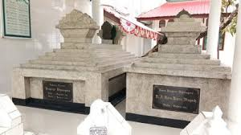
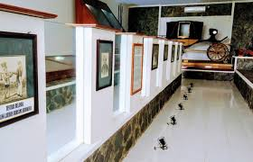
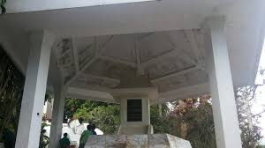
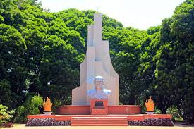

Pangeran Diponegoro

Makam Pangeran Diponegoro, Makassar
Makam Pangeran Diponegoro terletak di Kampung Jawa, Makassar, Sulawesi Selatan. Tempat ini menjadi situs sejarah penting karena menjadi tempat peristirahatan terakhir Pangeran Diponegoro setelah diasingkan oleh Belanda. Lokasi ini sering dikunjungi untuk mengenang perjuangan beliau melawan penjajah.

Museum Monumen Pangeran Diponegoro, Yogyakarta
Museum Monumen Pangeran Diponegoro, atau Sasana Wiratama, berada di Yogyakarta dan dibangun di bekas kediaman Pangeran Diponegoro. Museum ini menyimpan berbagai benda dan dokumentasi yang berkaitan dengan perjuangan Diponegoro dalam Perang Jawa.
Gerungan Saul Samuel Jacob Ratulangi

Makam Sam Ratulangi, Tondano
Makam Sam Ratulangi berada di Wawalintouan, Tondano, Minahasa, Sulawesi Utara. Tempat ini menjadi lokasi bersejarah untuk mengenang jasa beliau sebagai tokoh pendidikan, perjuangan, dan gubernur pertama Sulawesi.

Monumen Sam Ratulangi, Tondano
Monumen Sam Ratulangi di Tondano dibangun untuk menghormati jasa-jasanya bagi Indonesia. Tempat ini sering dikunjungi sebagai bagian dari wisata sejarah dan untuk meneladani semangat juang serta kecintaan beliau terhadap pendidikan.